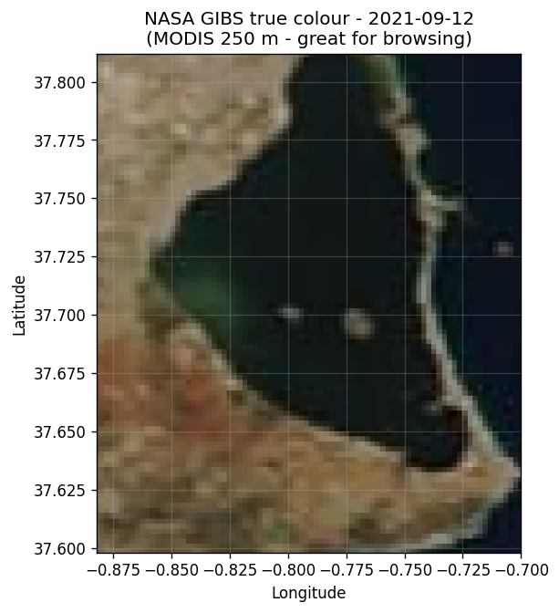
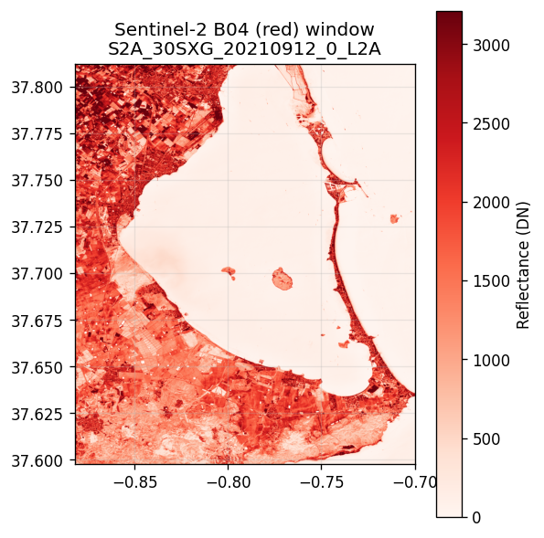
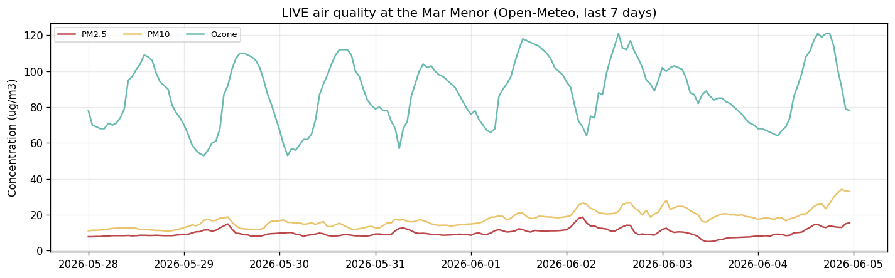
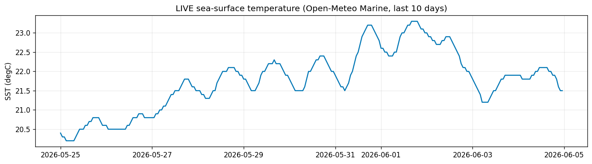
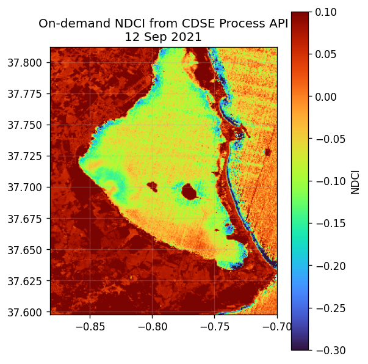
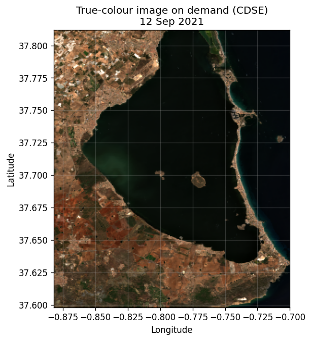
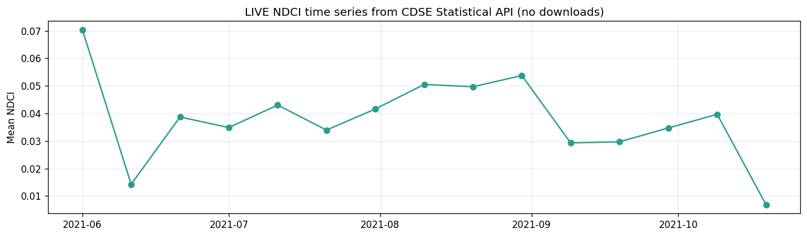
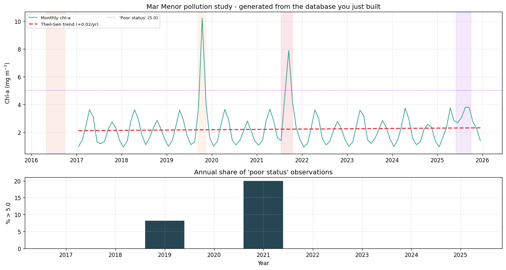
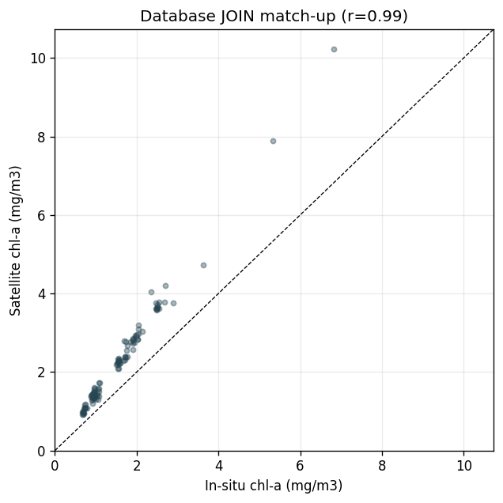

Step by step and live: discover, download, clean, store in SQLite + Parquet, and turn it into a pollution study — for any coast.
Grocery run → wash → chop → fridge → cook → run the restaurant. Every section of the notebook maps to one step.
| Source | Login? |
|---|---|
| NASA GIBS (true-colour) | none |
| Earth Search → AWS COG | none |
| Open-Meteo Air-Quality | none |
| Open-Meteo Marine | none |
| Copernicus CDSE / SH | free acct |
Prototype today with the four no-login sources; graduate to a free Copernicus account when you need server-side processing or the full archive.
The pattern never changes: discover → request a subset → get an array/table.
Four downloads you run in the room, no credentials. Each degrades gracefully if you're offline.
One URL → a true-colour PNG of the lagoon, any day since 2000. This is how you browse for cloud-free dates before a heavy download.
url = ('https://gibs.earthdata.nasa.gov/wms/'
...'&LAYERS=MODIS_Terra_...TrueColor'
f'&TIME={DATE}')
img = mpimg.imread(BytesIO(requests.get(url)...))
Search the public STAC, open the COG header without downloading, then read only the AOI window — ~8 MB, 3 % of the scene.
with rasterio.open(b04_href) as src: win = from_bounds(*aoi_utm, transform=src.transform) red = src.read(1, window=win) # ~8 MB instead of ~240 MB

A keyless API returns hourly PM2.5, PM10, ozone for any coordinate. Direct pollution context — one GET, one DataFrame.
url = ('https://air-quality-api.open-meteo.com'
f'/v1/air-quality?latitude={lat}&longitude={lon}'
'&hourly=pm10,pm2_5,ozone&past_days=7')
aq = pd.DataFrame(requests.get(url).json()['hourly'])
Same pattern, a different endpoint: hourly SST for any point — a free complement to the Sentinel-3 cube of Module 1.
url = ('https://marine-api.open-meteo.com/v1/'
f'marine?latitude={lat}&longitude={lon}'
'&hourly=sea_surface_temperature&past_days=10')
sst = pd.DataFrame(requests.get(url).json()['hourly'])
Register in class, paste your API key, and the server computes products for you — no raw-band downloads.
dataspace.copernicus.eu → Register → confirm email. Free, ~30k units/month.
Sentinel Hub dashboard → User settings → OAuth clients → Create. Copy the ID + secret.
The cell prompts you; the secret box is hidden.
# run -> paste when prompted CID = input("Client ID: ") CSEC = getpass.getpass("Secret: ") TOKEN = cdse_token(CID, CSEC) # every CDSE cell now runs live
Send a tiny evalscript (what each pixel should be) plus a date; CDSE runs it server-side and returns a ready NDCI array. No band downloads.
EVALSCRIPT = '''//VERSION=3
function evaluatePixel(s){
return [(s.B05-s.B04)/(s.B05+s.B04)];}'''
tif = process_ndci(TOKEN, BBOX, '2021-09-12')
The same API returns a real true-colour image and the raw per-band reflectance — read the chlorophyll signature straight off the spectrum.
# B02..B08 as FLOAT32, plus dataMask with rasterio.open(BytesIO(tif)) as src: a = src.read() # (6, H, W) mean_reflectance = a[:5][:, mask].mean(1)

The real game-changer: one request returns mean NDCI every 10 days over the AOI — downloading no imagery at all. This is how you run a monitoring dashboard cheaply.
js = stats_ndci(TOKEN, BBOX,
'2021-06-01', '2021-10-31', interval='P10D')
ts = pd.DataFrame(parse(js)) # 15 dates, 0 downloads
Mask the bad pixels, reshape to tidy rows, and load them into SQLite — typed, indexed and idempotent.
Raw pixels aren't observations. Keep only lagoon water, drop clouds, then reshape to long format: one row per (date, variable, zone, value).
valid = WATER_MASK & (b04>30) & (b04<800)
ndci = (b05-b04)/(b05+b04)
rows.append({'date':date,
'variable':'ndci', 'zone':zone,
'value':np.ma.median(ndci[sel])})The UNIQUE constraint + INSERT OR REPLACE make every re-run idempotent — no duplicates, safe to schedule.
Millions of per-pixel values go to Parquet, referenced from the DB.
CREATE TABLE observations(
obs_id INTEGER PRIMARY KEY,
date TEXT, source TEXT,
variable TEXT, zone TEXT,
value REAL,
UNIQUE(date,source,variable,zone));With everything in the database, monitoring questions become one query each.
Monthly-mean chl-a, a robust Theil-Sen trend, and the share of 'poor status' days per year. The exceedance counts spike in exactly 2019 and 2021.
monthly = pd.read_sql('''
SELECT substr(date,1,7) AS month,
AVG(value) AS chla
FROM observations WHERE variable='chla_mg_m3'
GROUP BY month''', con)
Load the in-situ series into a table and JOIN it to the satellite series by month — the match-up of a validation paper, in SQL. r = 0.99.
compare = pd.read_sql('''
SELECT m.month, m.chla_satellite, i.chla_mg_m3
FROM (...) m
JOIN insitu_monthly i ON m.month = i.month''', con)